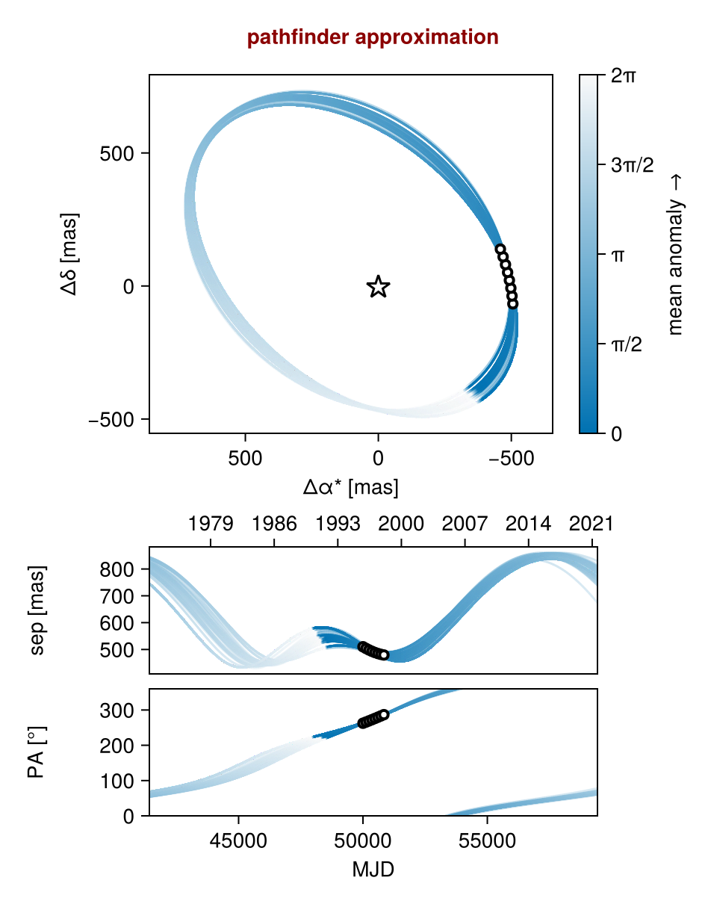
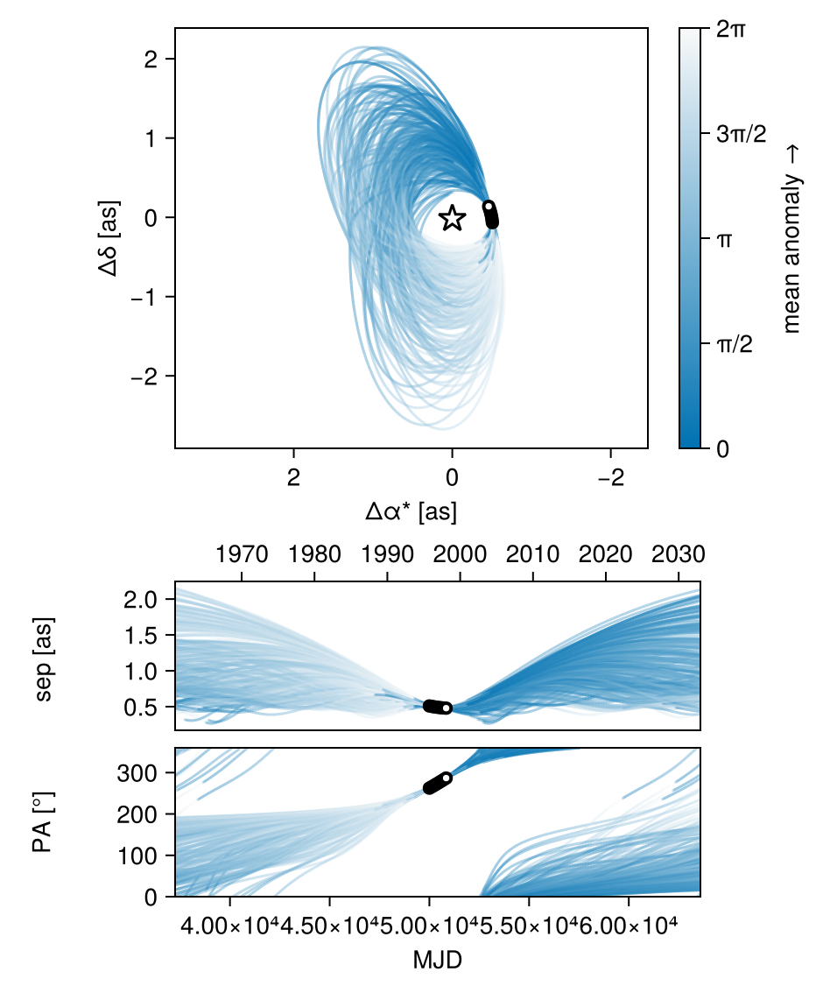
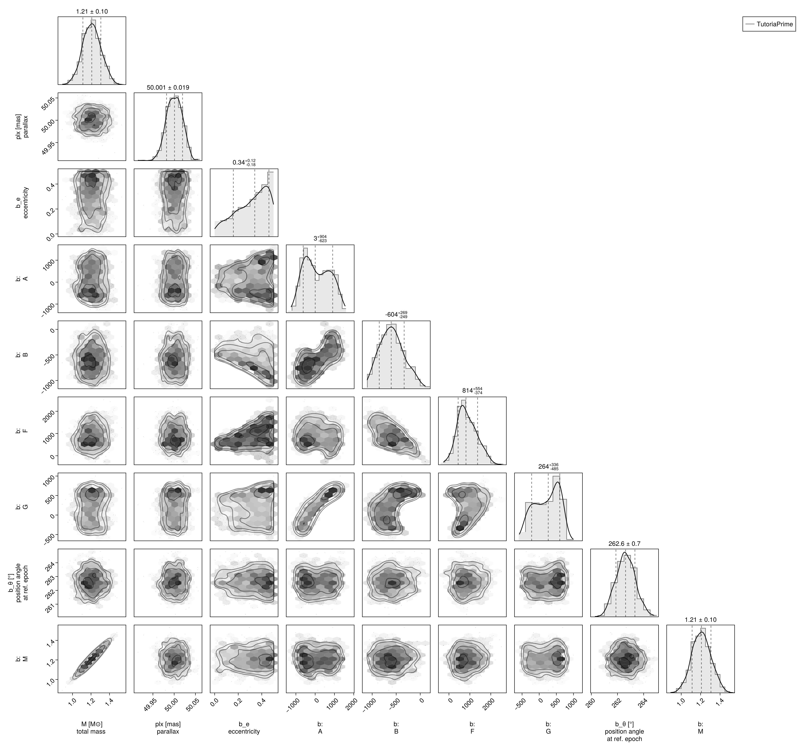
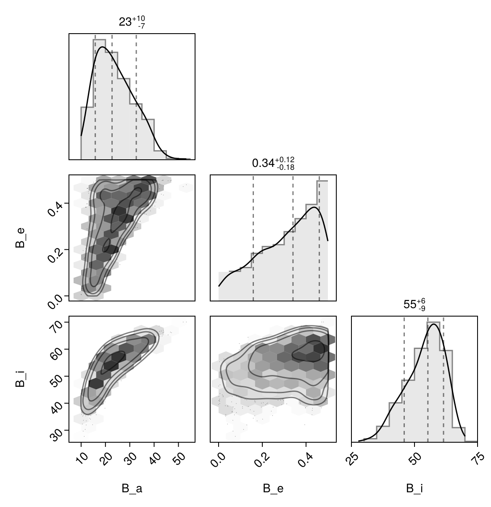

Fit with a Thiele-Innes Basis
This example shows how to fit relative astrometry using a Thiele-Innes orbital basis instead of the traditional Campbell basis used in other tutorials. The Thiele-Innes basis is more suitable then Campbell for fitting low-eccentricity orbits, because it does not have the issues where ω, Ω, and tp become degenerate as eccentricity and/or inclination fall to zero.
At the end, we will convert our results back into the Campbell basis to compare.
using Octofitter
using CairoMakie
using PairPlots
using Distributions
astrom_dat = Table(;
epoch = [50000, 50120, 50240, 50360, 50480, 50600, 50720, 50840],
ra = [-505.7637580573554, -502.570356287689, -498.2089148883798, -492.67768482682357, -485.9770335870402, -478.1095526888573, -469.0801731788123, -458.89628893460525],
dec = [-66.92982418533026, -37.47217527025044, -7.927548139010479, 21.63557115669823, 51.147204404903704, 80.53589069730698, 109.72870493064629, 138.65128697876773],
σ_ra = [10, 10, 10, 10, 10, 10, 10, 10],
σ_dec = [10, 10, 10, 10, 10, 10, 10, 10],
cor = [0, 0, 0, 0, 0, 0, 0, 0]
)
astrom_obs = PlanetRelAstromObs(
astrom_dat,
name = "GPI",
variables = @variables begin
# Fixed values for this example - could be free variables:
jitter = 0 # mas [could use: jitter ~ Uniform(0, 10)]
northangle = 0 # radians [could use: northangle ~ Normal(0, deg2rad(1))]
platescale = 1 # relative [could use: platescale ~ truncated(Normal(1, 0.01), lower=0)]
end
)
planet_b = Planet(
name="b",
basis=ThieleInnesOrbit,
observations=[astrom_obs],
variables=@variables begin
e ~ Uniform(0.0, 0.5)
A ~ Normal(0, 1000) # milliarcseconds
B ~ Normal(0, 1000) # milliarcseconds
F ~ Normal(0, 1000) # milliarcseconds
G ~ Normal(0, 1000) # milliarcseconds
M = system.M
θ ~ UniformCircular()
tp = θ_at_epoch_to_tperi(θ, 50000.0; system.plx, M, e, A, B, F, G) # reference epoch for θ. Choose an MJD date near your data.
end
)
sys = System(
name="TutoriaPrime",
companions=[planet_b],
observations=[],
variables=@variables begin
M ~ truncated(Normal(1.2, 0.1), lower=0.1)
plx ~ truncated(Normal(50.0, 0.02), lower=0.1)
end
)
model = Octofitter.LogDensityModel(sys)LogDensityModel for System TutoriaPrime of dimension 9 and 9 epochs with fields .ℓπcallback and .∇ℓπcallback
Initialize the starting points, and confirm the data are entered correcly:
init_chain = initialize!(model)
octoplot(model, init_chain)
We now sample from the model as usual:
results = octofit(model)Chains MCMC chain (1000×28×1 Array{Float64, 3}):
Iterations = 1:1:1000
Number of chains = 1
Samples per chain = 1000
Wall duration = 4.98 seconds
Compute duration = 4.98 seconds
parameters = M, plx, b_e, b_A, b_B, b_F, b_G, b_θx, b_θy, b_θ, b_M, b_tp, b_GPI_jitter, b_GPI_northangle, b_GPI_platescale
internals = n_steps, is_accept, acceptance_rate, hamiltonian_energy, hamiltonian_energy_error, max_hamiltonian_energy_error, tree_depth, numerical_error, step_size, nom_step_size, is_adapt, loglike, logpost, tree_depth, numerical_error
Summary Statistics
parameters mean std mcse ess_bulk ess_tail ⋯
Symbol Float64 Float64 Float64 Float64 Float64 ⋯
M 1.2089 0.0973 0.0046 439.0454 428.3132 ⋯
plx 50.0006 0.0186 0.0006 951.0045 641.9811 ⋯
b_e 0.3157 0.1371 0.0080 291.3823 294.4452 ⋯
b_A 100.3550 667.9759 58.0765 144.5038 295.1854 ⋯
b_B -587.5337 253.2766 17.8444 205.0193 179.9719 ⋯
b_F 876.3345 468.9167 35.1113 163.8632 129.3267 ⋯
b_G 214.7513 357.3055 34.3559 112.0806 252.4907 ⋯
b_θx -0.1295 0.0184 0.0009 454.0942 536.8811 ⋯
b_θy -1.0013 0.1008 0.0043 538.7573 507.8795 ⋯
b_θ -1.6994 0.0128 0.0006 442.0520 377.1981 ⋯
b_M 1.2089 0.0973 0.0046 439.0454 428.3132 ⋯
b_tp 28413.1541 23546.2764 1826.0519 201.0701 545.3711 ⋯
b_GPI_jitter 0.0000 0.0000 NaN NaN NaN ⋯
b_GPI_northangle 0.0000 0.0000 NaN NaN NaN ⋯
b_GPI_platescale 1.0000 0.0000 NaN NaN NaN ⋯
2 columns omitted
Quantiles
parameters 2.5% 25.0% 50.0% 75.0% ⋯
Symbol Float64 Float64 Float64 Float64 F ⋯
M 1.0210 1.1414 1.2080 1.2743 ⋯
plx 49.9650 49.9876 50.0008 50.0139 5 ⋯
b_e 0.0312 0.2117 0.3403 0.4321 ⋯
b_A -931.1711 -472.3986 3.4218 678.7761 130 ⋯
b_B -1035.5893 -769.7501 -603.5079 -417.9947 -5 ⋯
b_F 49.3439 546.5140 814.3275 1196.1408 185 ⋯
b_G -418.5578 -107.6728 263.9085 539.1209 70 ⋯
b_θx -0.1668 -0.1420 -0.1288 -0.1171 - ⋯
b_θy -1.2125 -1.0628 -0.9953 -0.9345 - ⋯
b_θ -1.7233 -1.7079 -1.6996 -1.6906 - ⋯
b_M 1.0210 1.1414 1.2080 1.2743 ⋯
b_tp -26807.6260 11761.2125 33942.8864 48686.6752 4980 ⋯
b_GPI_jitter 0.0000 0.0000 0.0000 0.0000 ⋯
b_GPI_northangle 0.0000 0.0000 0.0000 0.0000 ⋯
b_GPI_platescale 1.0000 1.0000 1.0000 1.0000 ⋯
1 column omitted
Notice that the fit was very very fast! The Thiele-Innes orbital paramterization is easier to explore than the default Campbell in many cases.
We now display the results:
octoplot(model,results)
octocorner(model, results, small=false)
Conversion back to Campbell Elements
To convert our chain into the more familiar Campbell parameterization, we have to do a few steps. We start by turning the chain table into a an array of orbit objects, and then convert their type:
orbits_ti = Octofitter.construct_elements(model, results, :b, :) # colon means all rows1000-element Vector{ThieleInnesOrbit{Float64}}:
ThieleInnesOrbit{Float64}(0.32089989455769263, 2912.324942280138, 1.347989095450713, 50.008594765579055, 681.6275610286292, -477.2363759958812, 1237.2602610326214, 605.3058050486512, -23.83846429907996, 9.300702655917071, 49311.26340961541, 0.04653974112129209, 1.394659064378375)
ThieleInnesOrbit{Float64}(0.31672337947324913, -1857.1044434454598, 1.4077207475406741, 49.99058082526465, 386.8302527936671, -624.5395479498272, 1464.9069771103477, 468.45525051530734, -27.325318917702997, 4.013930205869597, 53202.79983825767, 0.043135576331023794, 1.388190260285106)
ThieleInnesOrbit{Float64}(0.3224549821377757, -3457.903494662074, 1.2576565138180757, 49.98722476038342, 501.9856318380104, -604.8043014034545, 1427.4622784636497, 429.66615362360875, -26.27739378021919, 6.955561698392031, 55192.34482061574, 0.041580647477585116, 1.3970803054000445)
ThieleInnesOrbit{Float64}(0.3475955720519557, 48055.76004084034, 1.2912342021817953, 49.96439191174757, -767.0274655810115, -650.6568535881411, 576.0151273853469, -357.8426911186738, -5.303277910252121, -15.785301860443262, 30531.245473850737, 0.07516671520698028, 1.4372136644727094)
ThieleInnesOrbit{Float64}(0.184575602670815, 47943.860903857, 1.1903057339168628, 49.98394244811108, -630.0731028432941, -523.1585806239315, 551.583803558139, -309.82206336571255, -6.143370818126548, -12.082697060266886, 24505.32741737704, 0.09365038852000716, 1.205284415791837)
ThieleInnesOrbit{Float64}(0.32025674255185865, 48544.42272981329, 1.2024765209447144, 49.98658507798561, -596.7731473263436, -759.2683093719215, 807.4776189606724, -146.75851337759002, -10.257733245437194, -14.453514288325072, 34076.3053441867, 0.067346897213986, 1.3936597031510503)
ThieleInnesOrbit{Float64}(0.3946976136066273, -15673.25078855861, 1.3541912312162145, 50.008929853429315, 247.0502274974191, -745.3153512583857, 1691.1040190561532, 549.9671422572186, -31.905380231625994, 0.09886560480060808, 66556.66640845964, 0.03448089511219342, 1.517937310160366)
ThieleInnesOrbit{Float64}(0.4352519343177552, -37350.197879836735, 1.4500352517004174, 49.985421354307114, 155.5332969363953, -841.9854228002985, 2128.608436109487, 513.8283657870306, -40.332481479347166, -1.007880062221784, 87984.7672441957, 0.02608330402327386, 1.5941775701542285)
ThieleInnesOrbit{Float64}(0.36684750452118264, -26339.09217849867, 1.277778133685641, 49.98557774950235, 243.6179080924748, -726.2668294002503, 1868.0326878263397, 463.84538363551076, -35.350603357544365, 1.338352530452231, 77279.00756414283, 0.029696724968194137, 1.4692844105107463)
ThieleInnesOrbit{Float64}(0.25594596886315235, 13571.877358280908, 1.1691556979553706, 49.99384612811786, 73.05316583443516, -653.269466104389, 1123.1648181361502, 203.33989582067719, -18.69669074754794, -1.0867699194719487, 36914.28780112931, 0.06216924584353313, 1.299221626753654)
⋮
ThieleInnesOrbit{Float64}(0.04318539865739604, 33998.904264667806, 1.068476132915763, 50.00852729864993, 641.2894916943794, -178.31148847147668, 325.4295485825112, 479.4639324374083, -5.6819229683481405, 8.670206268217925, 19454.269528932044, 0.11796554119055254, 1.0441595206589076)
ThieleInnesOrbit{Float64}(0.10954132397603976, 36215.7430981126, 1.1842225907330877, 50.00912896886795, 40.99646239457964, -553.7215101837857, 511.6713480635717, 163.61552242911648, -4.916804880133764, -5.6618316188718385, 14202.173907444978, 0.1615902923315358, 1.1162586981646578)
ThieleInnesOrbit{Float64}(0.061328535530538845, 36282.99862591999, 1.1023951475722757, 50.00168839184797, 259.9415205288064, -420.3893381454825, 503.8002699846654, 349.2501832247557, -7.304000895103048, -0.8686403055825008, 14989.704367440878, 0.15310064676339893, 1.0633301122854089)
ThieleInnesOrbit{Float64}(0.07353895263793263, 29992.35251969208, 1.2084872427531763, 49.99715581130443, -64.85913069899925, -551.9133877870163, 727.4386925861237, 123.4257242326799, -10.633100287211445, -4.337943455654658, 20044.37220570492, 0.11449265708577155, 1.0764536170902113)
ThieleInnesOrbit{Float64}(0.05186429237208123, 31713.272893577265, 1.1821990613104074, 50.00054868018421, 363.7176485392216, -391.8566061538319, 648.5245098669924, 364.7213869338374, -10.89709184383536, 3.4122602983458794, 20039.330585945125, 0.11452146186245007, 1.0532818602727851)
ThieleInnesOrbit{Float64}(0.37350122284311366, 9292.099377673265, 1.1556578592216478, 49.980496401395506, 1061.6087556171528, -266.16874281217997, 701.4539648255934, 657.245189652135, -13.407159809065362, 17.011098123883137, 44205.982080185815, 0.0519145447166977, 1.4806568200948085)
ThieleInnesOrbit{Float64}(0.4146051318902794, -6947.317504038598, 1.396113164153764, 50.02109940775216, 909.1669938612198, -591.0719551745054, 1384.8929918327435, 562.664599313381, -25.258542320619036, 14.660264273984193, 59365.79932475311, 0.038657500775710944, 1.554508708033035)
ThieleInnesOrbit{Float64}(0.1304989653077483, 48859.1217929998, 1.1984373764163576, 49.97305947041638, -378.243223768741, -609.3098318113441, 739.3983850434905, -38.253558843590184, -10.471693820342459, -9.803214287807522, 24983.460677793464, 0.09185810817182723, 1.1402498742688645)
ThieleInnesOrbit{Float64}(0.2104095851451555, 49261.116043768285, 1.2045858812950543, 50.022654599223145, -316.70947938377594, -669.8728505583534, 868.5086375158677, 13.885960436164426, -12.723534244676703, -8.931770915438284, 28716.56118203142, 0.07991672188393274, 1.238127139288173)Here is one of those entries:
display(orbits_ti[1])We can now make a table of results (and visualize them in a corner plot) by querying properties of these objects:
table = (;
B_a = semimajoraxis.(orbits_ti),
B_e = eccentricity.(orbits_ti),
B_i = rad2deg.(inclination.(orbits_ti)),
)
pairplot(table)
We can also convert the orbit objects into Campbell parameters:
orbits_campbell = Visual{KepOrbit}.(orbits_ti)
orbits_campbell[1]KepOrbit{Float64}
─────────────────────────
a [au ] = 29.1
e = 0.32089989
i [° ] = 61.7
ω [° ] = 291.0
Ω [° ] = 15.6
tp [day] = 2910.0
M [M⊙ ] = 1.35
period [yrs ] : 135.0
mean motion [°/yr] : 2.67
──────────────────────────
plx [mas] = 50.0
distance [pc ] : 20.0
──────────────────────────